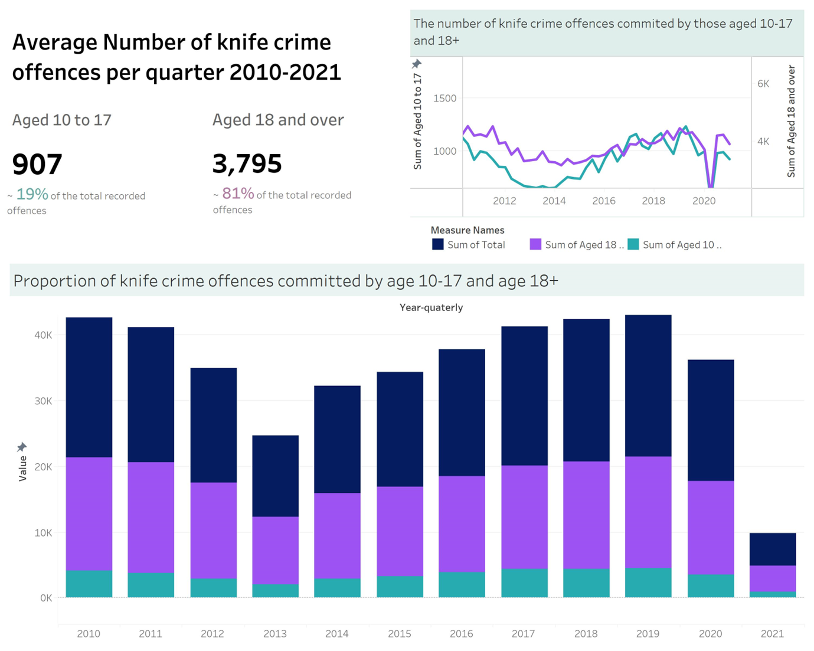
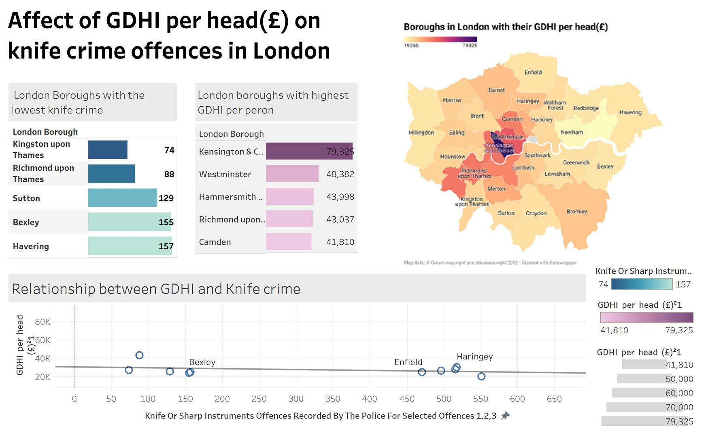

Data Analysis Projects
Below are some data analysis projects I have worked with before. I have used analysis tools such as tableau to design and javascript libraries to implement the visualisations
Tableau
Knife Crime Statistics Analysis
This project involved analyzing knife crime statistics to find meaningful information and patterns. The analysis includes cleaning and preparing the data before identifying topics to explore. Two dashboards were created to explore different aspects of the data.
First Dashboard: Knife Crime Offenses by Age Groups
The first dashboard focuses on presenting the analysis of knife crime offenses committed by different age groups. The goal is to examine the trends and patterns associated with age groups involved in knife crimes.
Second Dashboard: Correlation between GDHI and Knife Crime Offenses in London Boroughs
The second dashboard aims to explore potential correlations between the Gross Domestic Household Income (GDHI) per capita and the number of knife crime offenses committed in the boroughs of London. The objective is to investigate any potential relationship between income levels and the occurrence of knife crimes.
Through this project, we aim to gain insights into knife crime statistics and contribute to a better understanding of the factors influencing knife crime incidents in London.
R studio
Analysing used cars data
The aim of this data analysis project was to find out if there are any patterns and relationships between the car features to their selling price. Due to the volume of data and the range of selling values over-fitting when using analysis models needs to be considered. To tackle this issue three different linear regression models that consider different selling prices is considered for the analysis. Each model representative of different price range of cars.